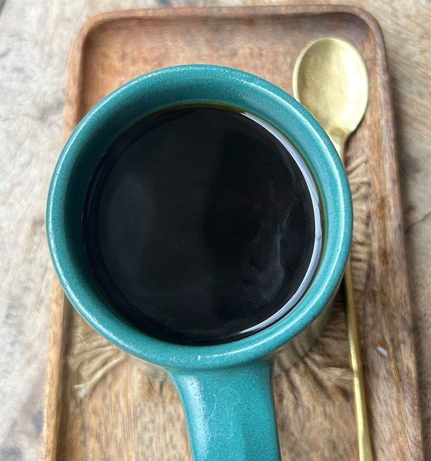
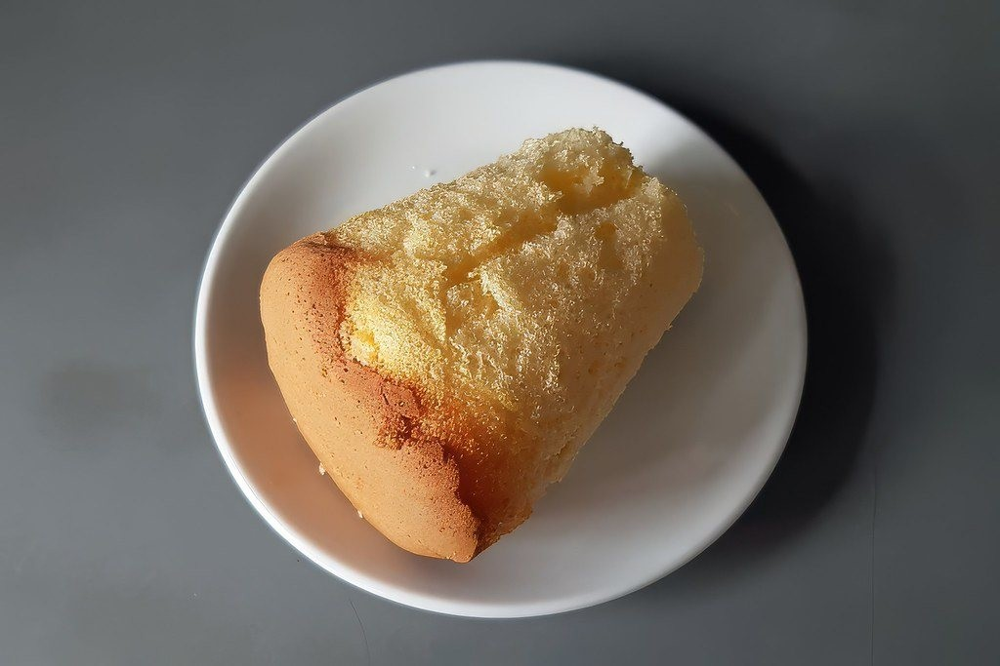
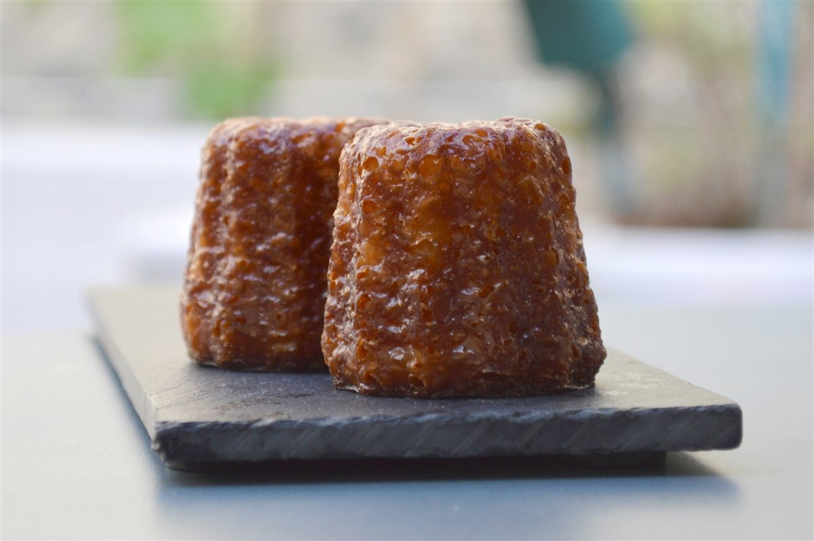
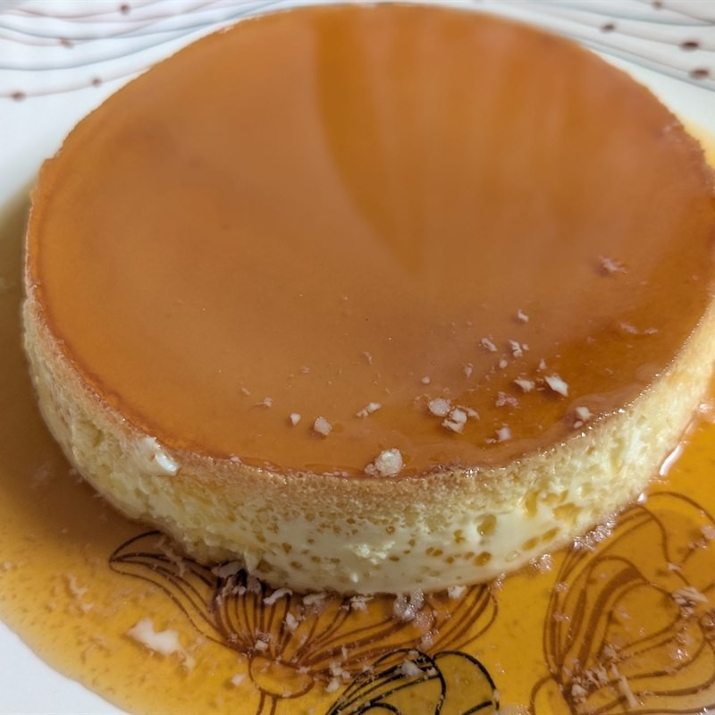
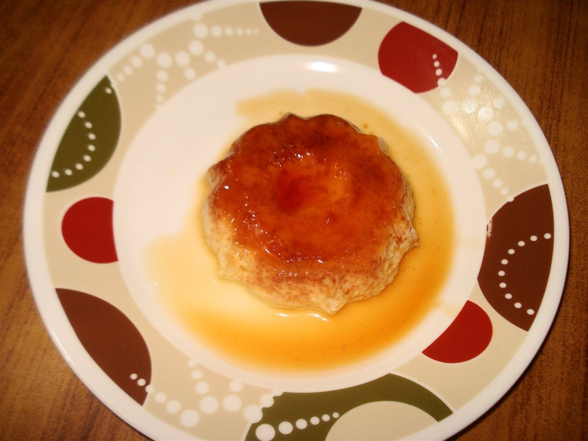

掲載の写真はフリー素材のイメージです。WaiWaicafeの店内・商品の実際の写真ではありません。他地域で撮影されたものや、撮影地が不明なものを含みます。
メニュー
メニュー・料金は準備中です。
(お問い合わせください)
掲載できる内容がそろうまでの間は、お電話またはInstagramでお尋ねください。
イメージ写真





商品名・区分名は、お店の情報が確認できるまで掲載しません。
お問い合わせ
メニューや料金については、お電話かInstagramでお問い合わせください。